Your Claude plan limits on your Android home screen — two accounts, live widgets, alerts before you hit the wall.
WIDGETSUSAGE HISTORYPINNED NOTIFICATIONGRANULAR ALERTSPERSONAL + WORKSIGN IN ON THE PHONE
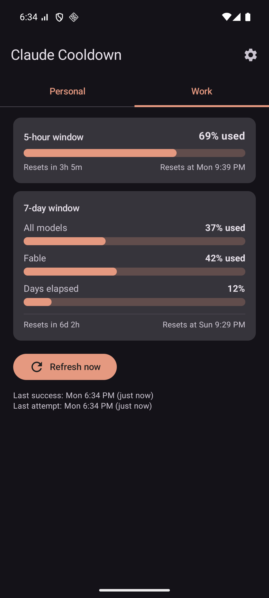
Live usage, per profile
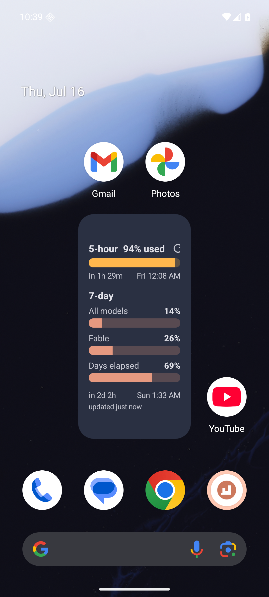
Home-screen widget
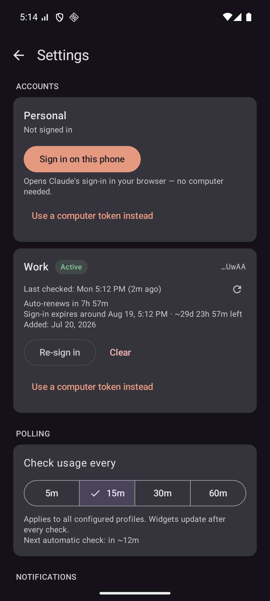
Signs in right on the phone
USER GUIDE
Version 0.13 · July 2026 Built by Robin Richard Rajan, with Claude Code Personal sideloaded app — not on any store · not affiliated with Anthropic
☰
What it is & what's inside
Claude Cooldown (CCooldown) is a personal home-screen widget app for your Claude plan limits — for two accounts at once. It shows the 5-hour and 7-day rolling windows for your Personal and Work profiles (including per-model caps like Fable), when each resets, how far into the week you are, forecasts when you'll hit a limit at your current pace — and warns you before you hit it, and again the moment a window resets.
📊 Both windows, at a glance5-hour session bar and the 7-day bars (All models, per-model caps, days elapsed) with exact reset times.
📅 Usage history NEWA scrollable bar for every 5-hour session, week by week — see how many you ran and which hit 100%.
📌 Pinned notification NEWAn optional always-on, silent notification with a status-bar gauge that fills as you use your 5-hour window.
🔔 Granular alertsPer-window threshold chips, reset pings set to off / if-busy / always, and a per-profile mute — no more all-or-nothing.
📈 Burn-rate forecastA sparkline of each window's usage curve plus a plain-words projection: "At this pace: 100% at Thu 2:40 PM."
👥 Personal + WorkTwo fully independent profiles — separate sign-ins, tabs, widgets, tiles and alerts — now with editable names.
📱 Widgets & tilesA full widget, a single-bar mini widget (place as many as you like), and two Quick Settings tiles.
🔒 Private, and backed upNo servers or telemetry; the token is Keystore-encrypted. History & settings now survive a reinstall (token excluded).
Contents
★New in 0.13history, pinned notification, granular alerts · page 3
1Installsideload the APK · page 4
2Connect your accountssign in on the phone · page 4–5
3Backup: computer tokenpaste / QR from Claude Code · page 6
4Reading the screensbars, pacing, forecast · page 7
5Widgetsfull & single-bar · page 8
6Alerts & Quick Settings tilespage 9
7Settings referencepage 10
8Troubleshooting · Privacypage 11
9Version history & dev notespage 12
Heads-up (the honest part): reading the usage API with a Pro token outside Claude Code / claude.ai isn't covered by Anthropic's consumer ToS — this is a personal-use tool and that risk was accepted when it was built. It's shared privately, free, for people who already pay for Claude.
Claude Cooldown · User Guide · v0.13 (July 2026)2
★
New in 0.13
What changed since v0.12
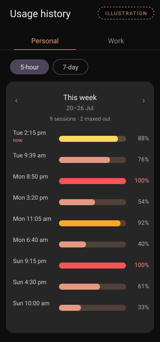
Usage history — a bar per session (illustration of a full week)
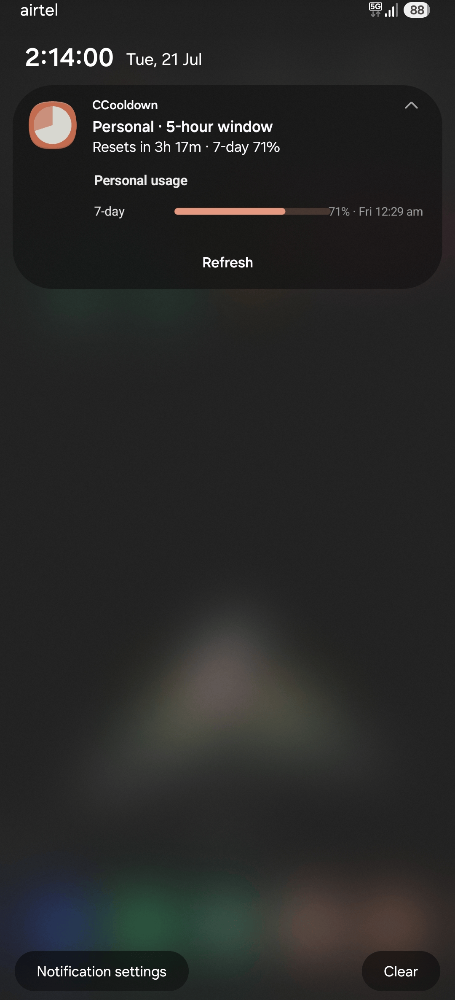
Pinned notification — always-on, expands to 7-day & Refresh
A new screen (calendar icon, top bar) shows a scrollable bar for every 5-hour session — newest first, labelled with day and start time, coloured by peak, and red when a session hit 100%. Page back through earlier weeks; a summary counts the sessions and how many maxed out. Switch to 7-day for one bar per week. Recorded as each window closes (kept a year), so it fills in over time.
📌 Pinned notification
An optional always-on, silent notification with a status-bar gauge that fills as you burn your 5-hour window. Collapsed shows the reset countdown and 7-day %; expanded adds the 7-day and per-model bars with one-tap Refresh. Follows your theme, turning orange then red near the limit. Enable it in Settings → Pinned notification and pick the icon (Ring / Pie / Battery / Number).
🔔 Granular alerts
No more all-or-nothing: tap threshold chips to choose exactly which levels warn you per window (5-hour 80/90/95, 7-day & per-model 75/90), set reset pings to Off / If busy / Always (If busy only pings when that window had reached 80%), and mute a whole profile with one switch.
✏️ Also new
Editable profile names — rename Personal / Work; it flows through tabs, widgets, tiles and notifications.
Clearer warning colours — a true red at 100%, distinct from the Claude Orange theme.
Auto Backup — history & settings survive a reinstall or new phone (the encrypted token is excluded).
One-time reinstall for this update. v0.13 moves to a permanent app-signing key, so updating from v0.12 needs an uninstall + reinstall (Android blocks an in-place update when the signature changes) — you'll sign in once more. Every update after v0.13 installs in place and keeps your data.
Claude Cooldown · User Guide · v0.13 (July 2026)3
1
Install
Android 12+ · sideloaded APK · about a minute
Get CCooldown.apk onto the phone — from the GitHub Releases page of the repo, or straight from the shared Release folder (OneDrive app → Documents ▸ Apps ▸ ClaudeUsage ▸ Release).
Tap the APK. When Android warns about unknown apps, allow installs from the app you opened it with, then tap Install. A Play Protect "scan app?" prompt may appear — scan or install anyway; you know where this one came from.
Open CCooldown and allow notifications when asked — that's what powers the usage alerts.
Updating from v0.13 onward? Just install the new APK over it — token, settings, history and widgets survive. Coming from v0.12? This one update needs an uninstall + reinstall (signing-key change) — see New in 0.13.
2
Connect your accounts
Two independent slots — Personal and Work
The app has two profile slots, Personal and Work — each with its own sign-in, polling, widgets, tiles and alerts. Set up one or both. Since v0.12, each profile signs in right on the phone — no computer needed:
Open ⚙ Settings and tap "Sign in on this phone" on the profile's card.
If you have several browsers, a picker appears — choose the browser where that account is already logged in to claude.ai (e.g. Work in Chrome, Personal in Brave). That's how you control which account gets connected.
The browser opens Claude's sign-in. Log in if needed, then tap Authorize.
The page shows a code — tap Copy, switch back to the app, tap Paste, then Finish sign-in.
The card turns Active and usage loads: "signed in — usage fetched, polling started."
Works for Personal (Pro / Max) and Work (Team) accounts alike. The sign-in is minted on the phone and is yours alone — no computer shares it, so nothing can rotate it away. It self-renews for about a month (the card shows "Sign-in expires around …"); you'll get 7 / 3 / 1-day warnings before it lapses, and renewing is the same one-minute flow via "Re-sign in".
Claude Cooldown · User Guide · v0.13 (July 2026)4
2
Sign-in, step by step
What you'll see on screen
1 — Each account card has "Sign in on this phone"
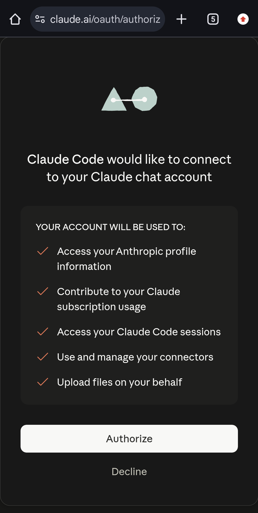
2 — Authorize in the browser (the standard Claude consent page)3 — Copy the code, Paste, Finish sign-in
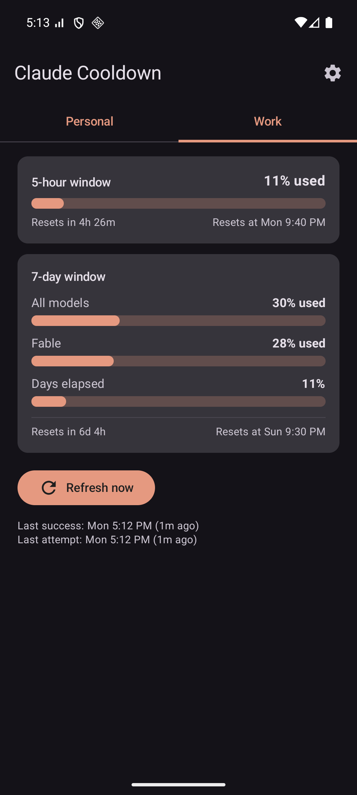
4 — Usage loads immediately — done, polling runs on its own
Why the browser picker matters
The sign-in lands on whatever claude.ai account that browser is logged into. Keeping Work in Chrome and Personal in another browser gives you a clean, repeatable way to connect each profile to the right account — no logging in and out.
What the card shows afterwards
Status chip — Active / Needs re-auth
Plan badge — Pro, Max or Team
Last checked, with a one-tap "check now" button
Auto-renew countdown & last auto-renewed time
"Sign-in expires around …" (≈30-day estimate)
Token safety: the sign-in is stored encrypted on the phone only (Android Keystore) and is never sent anywhere except Anthropic's own API. No servers, no telemetry, no analytics — nothing else ever sees it.
Claude Cooldown · User Guide · v0.13 (July 2026)5
3
Backup: use a computer token
Only needed if the phone can't run the browser sign-in
Each card keeps the old method under "Use a computer token instead": copying the token that the Claude Code CLI holds on the machine where that account is signed in.
Windows
Open C:\Users\<you>\.claude\.credentials.json in Notepad, select all, copy.
Or the clipboard way: get the JSON onto the phone's clipboard privately (Link to Windows, Quick Share, a synced note — delete it afterwards) and tap "Paste from clipboard". Either way the app validates the token with a live call and starts polling.
If the command finds nothing: the Claude Code CLI isn't installed or signed in on that machine (the desktop app's login is stored separately and can't be used). Install the CLI, run claude, sign in with the right account, retry.
Why phone sign-in is better: a pasted token is shared with that computer — if its Claude Code re-logs-in, the token rotates and the app asks for a re-paste. "Sign in on this phone" gives the phone its own token, so that can't happen.
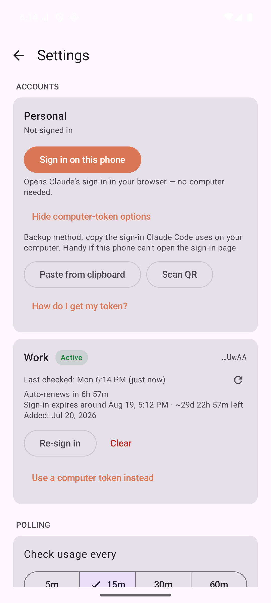
"Use a computer token instead" reveals Paste from clipboard & Scan QR
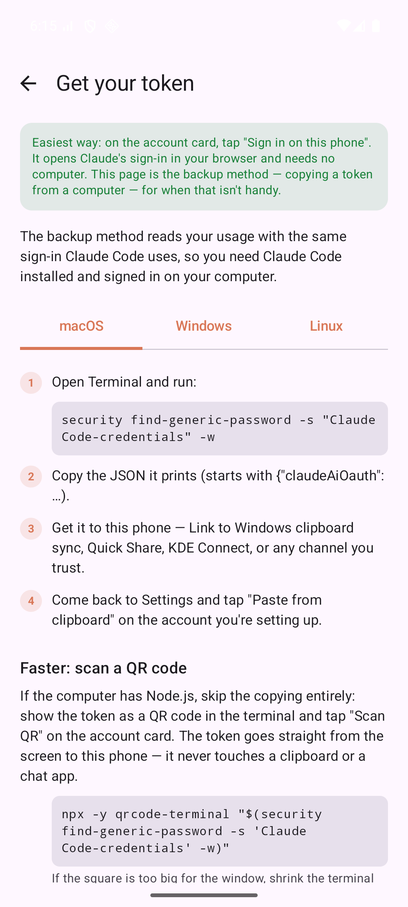
The full walkthrough also lives in-app: "How do I get my token?" (macOS / Windows / Linux)
Claude Cooldown · User Guide · v0.13 (July 2026)6
4
Reading the screens
Two tabs — Personal | Work — swipe or tap to switch
5-hour window card
"X% used", the bar, and a split reset line — left:Resets in 3h 27m · right:Resets at Mon 9:40 PM.
7-day window card
All models — your total weekly usage
Fable (and any other per-model cap the API reports)
Days elapsed — how far through the 7-day window you are (time, not usage). All three share one reset footer — they reset together.
The pacing trick
Compare Days elapsed against the usage bars. Usage behind Days elapsed → you have headroom. Usage ahead of it → you may run out before the weekly reset.
Burn-rate forecast v0.9+
Once a window has ~20 minutes of history, each card grows a sparkline of that window's usage curve (solid = what happened, dashed = where it's heading) and a plain-words projection — "At this pace: 100% at Thu 2:40 PM — 1h 20m before the reset" in red when you're on course to hit the wall, or "At this pace: ~62% when the window resets" in grey when you're safe. History comes from the app's own polls and stays on the phone.
Bar colors
Your theme color normally → yellow above 80% → orange above 90% → red at 100%. Only the bars shift; text stays neutral.
Data refreshes automatically every 15 minutes (configurable, minimum 5). "Last success / Last attempt" under the Refresh button always tell you how fresh the numbers are.
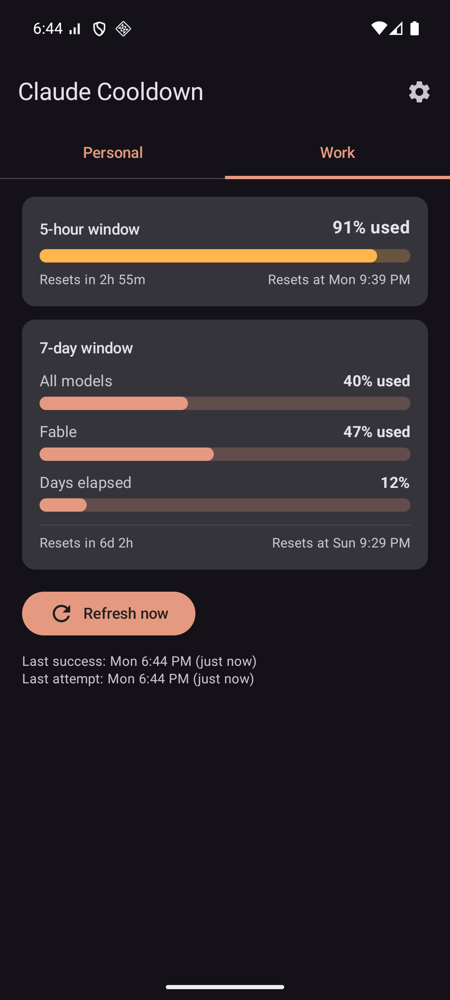
Dark theme, live data — at 91% the 5-hour bar has shifted to its above-80% yellow
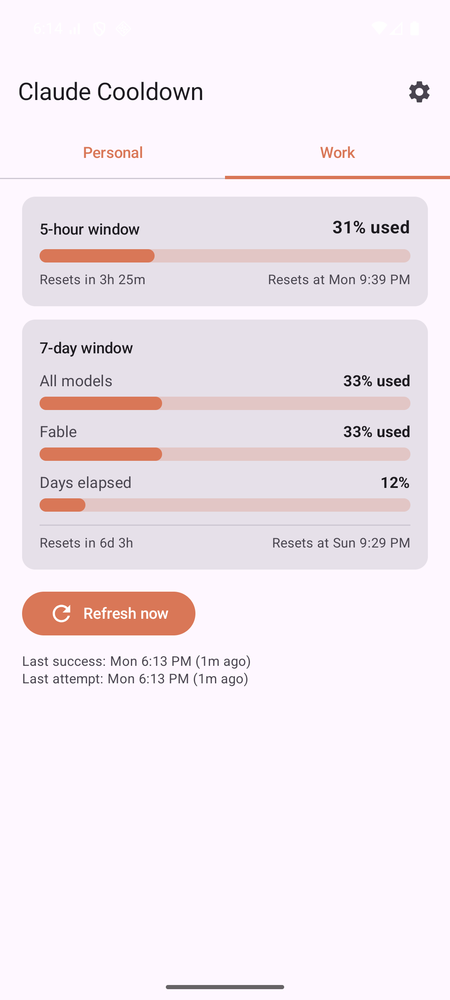
Light theme — same layout, same story
Claude Cooldown · User Guide · v0.13 (July 2026)7
5
Widgets
The whole point — usage without opening anything
Full widget, dark — 5-hour, all 7-day bars, days elapsed and reset times
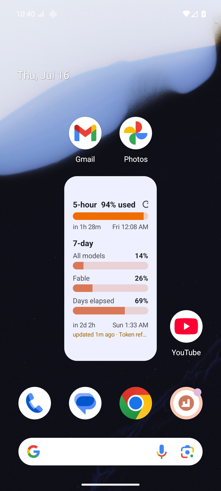
Full widget, light — follows the system theme and your accent color
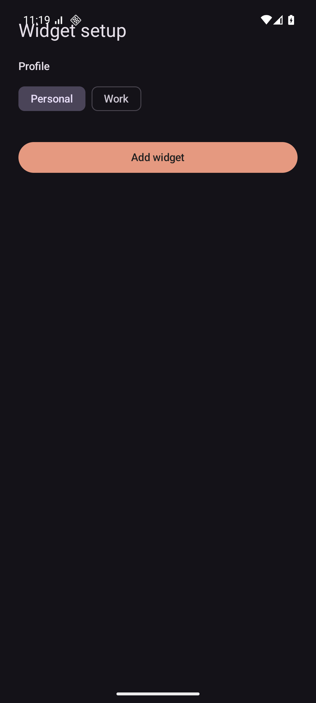
Drop a widget → setup screen asks which profile it should show
Two widget types
Full widget (4×3 default) — everything: 5-hour, 7-day bars, days elapsed, reset times.
Single-bar widget (2×1) — one bar of your choice: 5-hour, 7-day all-models, per-model (Fable), or days elapsed. Place as many as you like, mixing profiles freely.
Resizing
Long-press → drag the handles: small = 5-hour only · medium = 5-hour + 7-day total · large (default) = everything.
Widget behavior
Refresh icon (top-right) = refresh now — rate-limited to once per 3 minutes; the API forbids faster polling.
Tapping anywhere else opens the app on that profile.
Footer = weekly reset (left) and "updated Xm ago" (right). If it turns amber, the last fetch failed or data is >45 min old — you're seeing the last known good numbers, never a blank.
Claude Cooldown · User Guide · v0.13 (July 2026)8
6
Alerts & Quick Settings tiles
The app taps you on the shoulder — you never babysit it
Alert
When it fires
5-hour at 80%
Time to pace yourself
5-hour at 95%
You're about to be cut off
7-day at 90%
Weekly budget nearly spent
Per-model cap at 90%
A model's own weekly cap (e.g. Fable) is nearly spent — these used to fill up silently
Window reset
The 5-hour or 7-day window just reset — Claude is fresh again (scheduled at the known reset moment, lands within ~2 min)
Re-auth needed
The profile's token stopped working — or renewals have failed 6+ hours straight
Sign-in expiring
7 / 3 / 1 days before the known expiry — renew at your convenience
Usage data stale
Polls failing for 6+ hours — the widget numbers are old and nothing else would tell you
Every alert is prefixed with its profile ("Personal: …" / "Work: …"), fires once per window/episode and re-arms afterwards. Tapping one opens the app on that profile's tab; re-auth and stale alerts dismiss themselves once fixed. Granular now: threshold chips per window, reset pings set Off / If busy / Always, and a per-profile mute (Settings → Notifications).
Quick Settings tiles — one per profile
Usage from inside any app: pull down the shade — "Personal 94% / 7d 14%" and "Work 37% / 7d 62%" are separate tiles. Add them once: shade fully down → ✏ edit → drag Claude Personal / Claude Work in. Tapping a tile opens that profile's tab; opening the shade nudges a background refresh (skipped if data is under 3 minutes old, so shade-flicking doesn't spam the API).
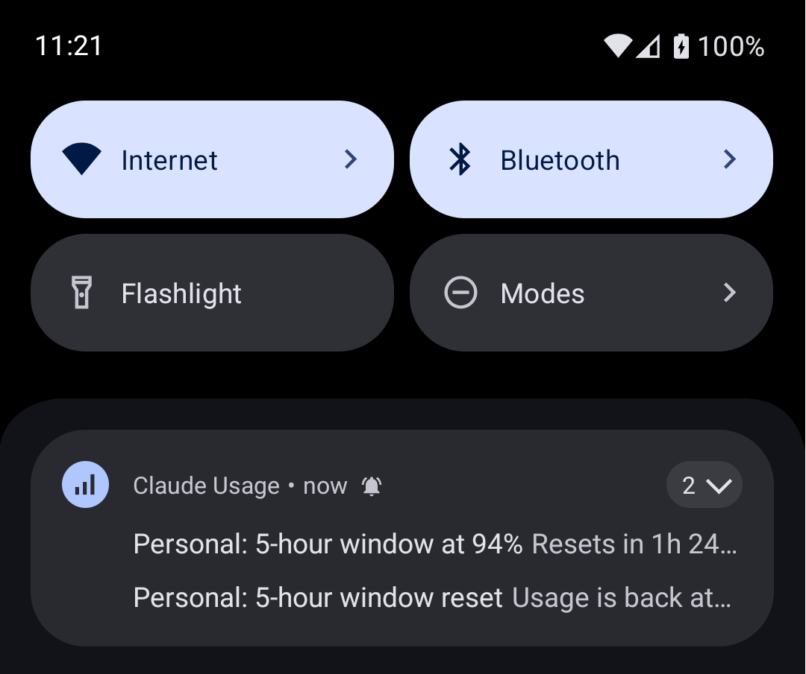
Threshold + reset notifications, prefixed per profile
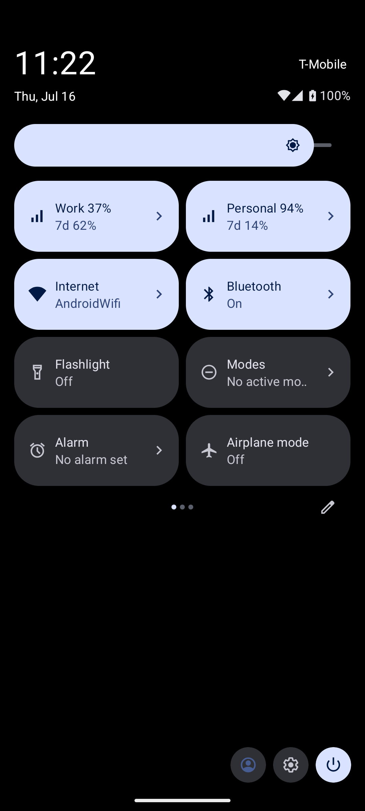
Two tiles in the shade — Personal and Work
Claude Cooldown · User Guide · v0.13 (July 2026)9
7
Settings reference
Everything lives on one screen
Setting
What it does
Account cards
"Sign in on this phone" (with browser picker) — or the paste / QR backup. Once signed in: status chip, plan badge (Pro / Max / Team), last-checked with check-now, auto-renew countdown, "Sign-in expires around …", added date, token tail, backoff status, Re-sign in / Clear.
Profile names
Rename Personal / Work to anything — flows through tabs, widgets, tiles and notifications
Check usage every
5 / 15 / 30 / 60 min presets (default 15) — saves on tap
Per window: Off / If busy (only if it reached 80%) / Always
Profile / sign-in / stale alerts
Per-profile mute, plus separate sign-in and stale-data toggles
Pinned notification
Always-on usage notification: on/off, which profile, status-bar icon style
System notif. settings
Opens Android's per-channel controls
24-hour time
Off = "Thu 11:45 PM" (default) · On = "Thu 23:45"
Theme color
13 choices: Material You (dynamic), Claude Orange (default), Blue, Indigo, Cyan, Teal, Green, Amber, Deep Orange, Red, Pink, Purple, Brown — applies to app and widget bars
Widgets
"Add widget to home screen" shortcuts for both types
About
Version, credits, Share feedback (WhatsApp). Tap the version 7× to unlock the debug raw-response viewer.
Below the Refresh button the app shows Last success and Last attempt as "Mon 6:14 PM (2m ago)". A red status line appears only when something's wrong.
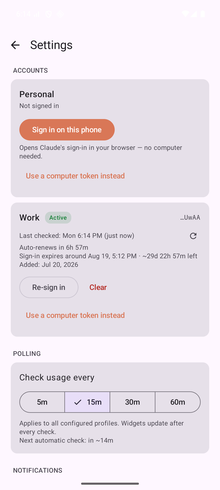
Accounts & polling — light theme
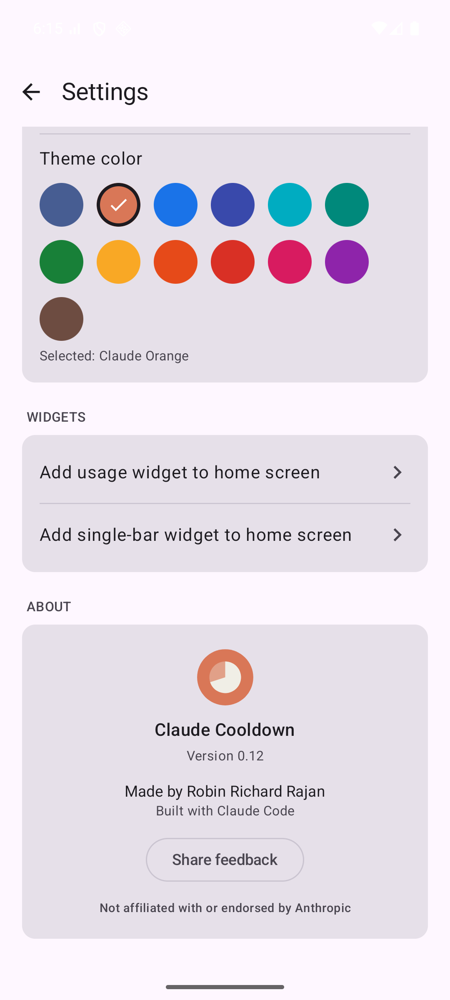
Theme colors, widget shortcuts, About
Claude Cooldown · User Guide · v0.13 (July 2026)10
8
Troubleshooting & privacy
Symptom
Meaning / fix
Widget footer is amber
Data is stale (failed fetch or >45 min old). Usually temporary; self-heals on the next poll.
"Re-auth needed"
The token and its refresh both failed. Tap "Re-sign in" on that card — or re-paste from a computer if you use the backup method.
"Rate limited (429)"
The API asked us to back off; automatic retries with increasing delays (5 min → 1 h max).
"Token refresh failed (HTTP 429)"
Usually a dead refresh token, not real rate-limiting — the source machine's Claude Code rotated it. Fix: "Sign in on this phone", which gives the phone its own sign-in so this can't recur. (Through v0.11 the app itself could trigger this on every renewal — fixed in v0.12.)
Widget says "No data yet"
No successful fetch so far — tap the widget refresh icon, or open the app and check the status line.
Alerts never appear
Check notification permission and the Usage alerts toggle.
Anything else
Settings → Show last raw response (7 taps on the version) + the red status line tell the whole story.
Privacy & good-to-know
No servers, no telemetry, no analytics. The app talks only to api.anthropic.com (usage), platform.claude.com (sign-in code exchange + token refresh) and claude.com (the sign-in page in your browser) — the same endpoints Claude Code uses.
The token lives in Android-Keystore-encrypted storage; cached usage numbers contain nothing sensitive.
Polling is deliberately gentle — 15-minute default, 3-minute manual floor, exponential backoff on 429s.
Reading the usage API with a Pro token outside Claude Code / claude.ai is not covered by Anthropic's consumer ToS; personal-use risk was accepted when this was built.
Not affiliated with or endorsed by Anthropic. Sideload-only, free, no accounts, no strings.
Claude Cooldown · User Guide · v0.13 (July 2026)11
9
Version history & dev notes
Ver.
Highlights
0.13
History, pinned notification & finer alerts. New Usage history screen (per-session and per-week bars, backed by a year-long session log); optional always-on pinned notification with a status-bar usage gauge; granular alerts (per-window threshold chips, off/if-busy/always resets, per-profile mute); editable profile names; true warning-red at 100%; Android Auto Backup for history + settings (token excluded). Now signed with a permanent key, so updates from here on retain data — the one-time cost was this upgrade needing a reinstall.
0.12
Native sign-in release. "Sign in on this phone" — the same PKCE flow Claude Code uses, no computer at all, browser picker included; works for Pro/Max and Team. Also fixed the chronic HTTP 429 on token exchange/renewal (Anthropic's token endpoint rejects requests identifying as claude-code — the app no longer sends that identity on token calls). Computer-token paste/QR stays as backup.
0.10
QR fixes & diagnostics — Windows QR command extracts just the sign-in object; refresh failures now say why in the status line.
0.9
Forecast & QR release — on-phone poll history (8 days) with sparkline + burn-rate forecast per window; per-model 90% alerts; "Scan QR" token import; notifications open the right profile tab.
0.8
Token health — plan badge, auto-renew countdown, sign-in expiry warnings (7/3/1 days), stale-data alert, self-dismissing notifications.
0.7
Renamed to Claude Cooldown, new launcher icon, grouped Settings, in-app token guide, poll presets, About & feedback.
0.6
Two profiles (Personal + Work), widget setup screen, single-bar widget, reset notifications at the exact moment, two Quick Settings tiles.
0.5
Redesign — grouped 7-day card with days-elapsed pacing bar, Claude-style bars, split reset rows, 13 theme colors, widget polish.
0.4
Usage alerts, Quick Settings tile, auto-refresh on open.
0.1–0.3
First working app + widget; large widget layout; Material You polish.
Build (signed release): JAVA_HOME=/opt/homebrew/opt/openjdk@17 ./gradlew :app:assembleRelease → APK in app/build/outputs/apk/release/. Signing reads a gitignored keystore.properties + .jks at the repo root — back them up; losing them means no more updates.
Glance gotcha: RemoteViews containers max out at 10 children — keep widget blocks in nested Columns.
If Anthropic changes the undocumented response schema, the parser ignores unknown fields; if bars go blank, check the raw JSON in the debug view first.
Built by Robin Richard Rajan — written end-to-end with Claude Code.
Every line of Kotlin, every screenshot, this guide and the release pipeline were produced in Claude Code sessions — including reverse-engineering the sign-in flow the app now uses. If you'd like the APK or want to build something like this, just ask.
Claude Cooldown · User Guide · v0.13 (July 2026)12